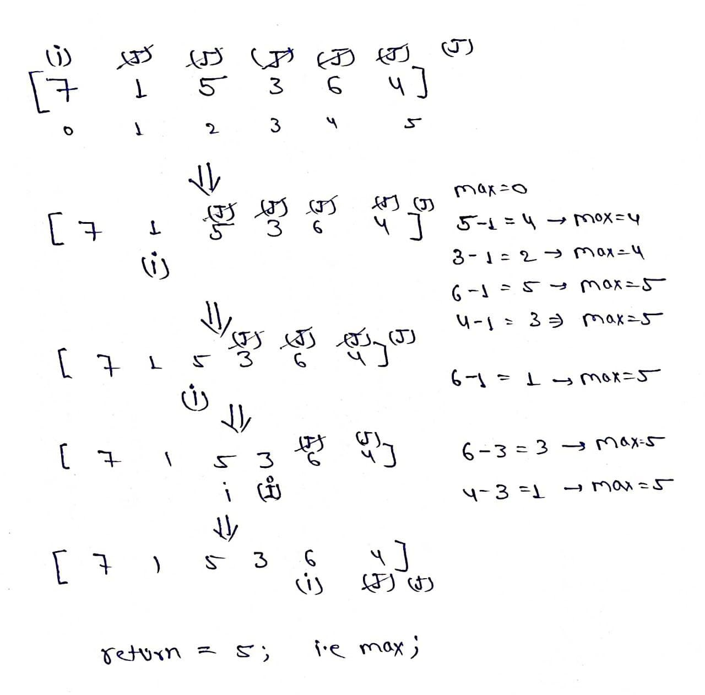
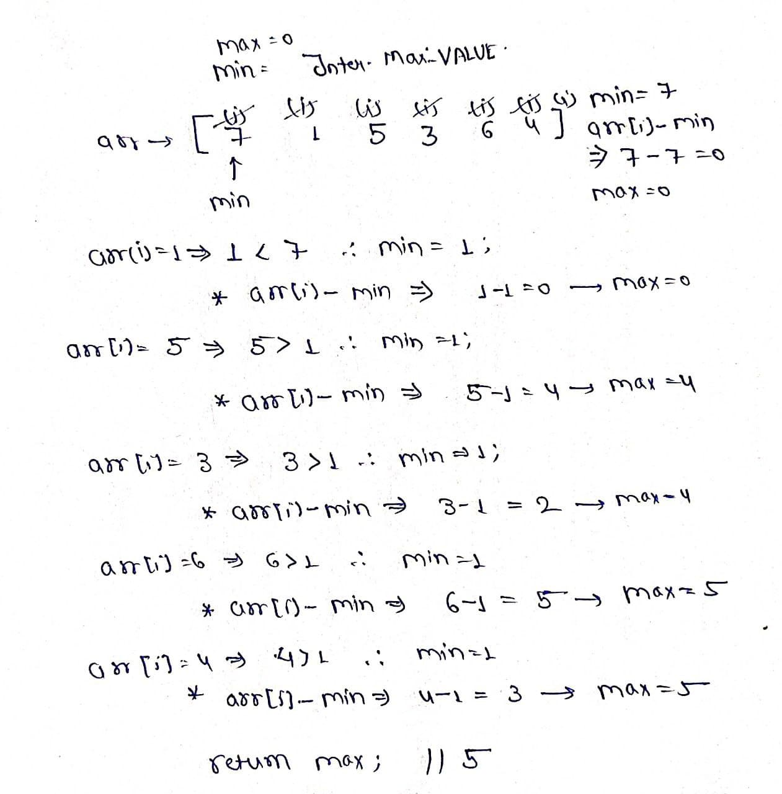

Stock Buy And Sell
Problem Statement: You are given an array of prices where prices[i] is the price of a given stock on an ith day. You want to maximize your profit by choosing a single day to buy one stock and choosing a different day in the future to sell that stock. Return the maximum profit you can achieve from this transaction. If you cannot achieve any profit, return 0.
Examples
Input: prices = [7,1,5,3,6,4] Output: 5 Explanation: Buy on day 2 (price = 1) and sell on day 5 (price = 6), profit = 6-1 = 5. Note: That buying on day 2 and selling on day 1 is not allowed because you must buy before you sell.
Input: prices = [7,6,4,3,1] Output: 0 Explanation: In this case, no transactions are done and the max profit = 0.
Disclaimer: Here is the practice link to help you assess your knowledge better. It's highly recommend trying to solve it before looking at the solution.
Brute Force Approach
Algorithm
- Loop through all days to consider each as a possible buy day.
- For each buy day, loop through all future days to consider them as sell days.
- Calculate the profit for each (buy, sell) pair.
- Track the maximum profit seen.

Code
#include <bits/stdc++.h>
using namespace std;
class Solution {
public:
// Function to calculate max profit using brute force
int stockbuySell(vector<int>& prices) {
// Initialize max profit to 0
int maxProfit = 0;
// Loop through each day as a potential buy day
for(int i = 0; i < prices.size(); i++) {
// Loop through each future day as a potential sell day
for(int j = i + 1; j < prices.size(); j++) {
// Calculate the profit
int profit = prices[j] - prices[i];
// Update max profit if this is higher
maxProfit = max(maxProfit, profit);
}
}
// Return the maximum profit
return maxProfit;
}
};
// Driver code
int main() {
Solution sol;
vector<int> prices = {7, 1, 5, 3, 6, 4};
cout << "Max Profit: " << sol.stockbuySell(prices) << endl;
return 0;
}
Complexity Analysis
Time Complexity: O(n²) Because for each element, we are checking every future element nested loops.
Space Complexity: O(1) No extra space used, only variables for storing max profit.
Optimal Approach
Algorithm
- What’s the lowest price we’ve seen so far?
- What’s the profit if we sold today?
- Is it better than our best so far?
- Initialize a variable to store the minimum price so far, set it to a very large value initially.
- Initialize a variable to store the maximum profit seen so far, set it to 0 initially.
- Loop through each price in the array.
- Update the minimum price if the current price is smaller.
- Calculate the profit if the stock were bought at the minimum price and sold at the current price.
- Update the maximum profit if this new profit is higher.
- Return the maximum profit after the loop ends.

Code
#include <bits/stdc++.h>
using namespace std;
class Solution {
public:
// Function to calculate maximum profit using single pass
int stockbuySell(vector<int>& prices) {
// Initialize the minimum price to a large number
int minPrice = INT_MAX;
// Initialize the maximum profit to 0
int maxProfit = 0;
// Traverse each price in the array
for (int price : prices) {
// If current price is less than minPrice, update minPrice
if (price < minPrice) {
minPrice = price;
}
// Else calculate profit and update maxProfit if it's greater
else {
maxProfit = max(maxProfit, price - minPrice);
}
}
// Return the maximum profit found
return maxProfit;
}
};
// Driver code
int main() {
Solution obj;
vector<int> prices = {7, 1, 5, 3, 6, 4};
cout << obj.stockbuySell(prices) << endl;
return 0;
}
Complexity Analysis
Time Complexity: O(n),This is because we are iterating through the array of prices exactly once. There are no nested loops or recursive calls.
Space Complexity: O(1),Only two variables are used to store the minimum price and maximum profit, regardless of the input size.